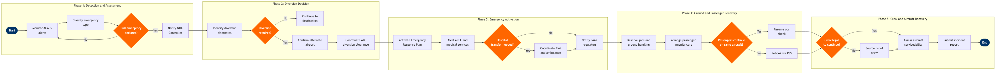

| Step | L4 Step Name | KPI / Target | Pain Point / Risk | Gate |
|---|---|---|---|---|
| 1.1 | Monitor real-time ACARS & ACMS flight alerts | Alert acknowledgement within 2 minutes of ACARS receipt; 100% alert capture rate | High ACARS message volume creates noise; controllers must distinguish genuine emergencies from routine fault codes without cockpit confirmation — risk of delayed response during shift handover | |
| 1.2 | Classify emergency type and severity level | Classification completed within 5 minutes of initial alert; misclassification rate <1% | Ambiguous early reports from cockpit force controllers to act on incomplete information; multi-type events (e.g. medical + mechanical) may be misclassified, delaying correct response track | |
| 1.3 | Determine if full emergency declaration is required | Decision latency <3 minutes from classification; 0 missed full-emergency escalations | Ambiguity in Level 2 events where crew has not declared Mayday/Pan-Pan; NOC may under-declare to avoid costly ARFF standby fees, creating liability exposure if situation worsens | ⚠ |
| 2.1 | Identify candidate diversion airports and performance data | Alternate identification completed within 5 minutes; fuel calculation accuracy ±50 kg | Real-time runway contamination and NOTAM status not always reflected immediately in NAVBLUE; stale NOTAMs risk selecting an airport with active runway closure | |
| 2.2 | Evaluate diversion airport suitability and slot availability | Evaluation complete within 4 minutes; 100% runway compatibility verified before recommendation | Coordinated airports (Level 3) require slot approval that cannot be obtained in real-time during emergency — dispatcher must accept non-compliance risk and coordinate retroactively with slot coordinator | |
| 2.3 | Confirm diversion decision and alternate airport selection | Diversion instruction transmitted to crew within 10 minutes of initial alert; 0 diversions to airports with insufficient runway performance | Crew and NOC may disagree on preferred alternate; without clear authority hierarchy in SOPs this creates delay — particularly when crew has elected an airport not on the approved alternate list | ⚠ |
| 2.4 | Coordinate ATC diversion clearance via datalink | ATC clearance obtained within 3 minutes of diversion decision; 100% amended flight plan filed within 5 minutes | In non-radar oceanic airspace or remote FIRs, HF voice communication is required instead of datalink — significantly increasing coordination time and controller workload | |
| 3.1 | Activate Emergency Response Plan and notify ERT | ERP activation within 5 minutes of emergency declaration; 100% of required ERT contacts notified within 10 minutes | ERP contact trees rely on manual phone call cascades — if primary contacts are unavailable during off-hours, escalation path is unclear and notification time degrades significantly | |
| 3.2 | Alert ARFF, medical, and emergency services at diversion airport | Diversion airport notified within 5 minutes of diversion decision; ARFF on standby confirmed ≥15 minutes before estimated landing | SITA AMS interface with some regional airports is limited to telex-only — automated notification fails and NOC must resort to direct phone calls, introducing manual error and delay | |
| 3.3 | Determine if hospital transfer or specialist medical support needed | Medical severity determination within 5 minutes of crew report; EMS request placed ≥20 minutes before landing for Level 1 medical events | In-flight medical advisories (e.g. MedLink) are contracted by airline but cabin crew may not initiate contact in time; late escalation reduces hospital preparation time and increases patient risk | ⚠ |
| 3.4 | Notify regulatory authorities per emergency event type | Regulatory notification completed within 30 minutes of event; 100% compliance with ICAO Annex 13 / FAR Part 830 reporting timelines | International diversions trigger multi-authority notification requirements (local CAA, ICAO state of registry, ICAO state of operator) — manual tracking in OCC frequently results in missed or delayed filings | |
| 4.1 | Reserve gate, parking, and coordinate ground handling at diversion airport | Ground handling confirmation received ≥20 minutes before estimated landing; 100% PRM passengers pre-identified and notified to handler | At outstations with no contracted ground handler, NOC must arrange ad-hoc handling at premium cost with unpredictable service levels — especially critical for widebody or heavy aircraft at small airports | |
| 4.2 | Arrange immediate passenger care and amenity provision | Passenger care plan communicated to diversion station within 30 minutes of landing; vouchers issued within 1 hour per EC261/DOT consumer protection requirements | Altéa PSS does not automatically flag all MEDA passengers to diversion station — manual cross-check of Special Services Requests is required, creating risk of missed care for vulnerable passengers | |
| 4.3 | Assess whether passengers can continue on diverted aircraft | Continue / cancel decision communicated to passengers within 45 minutes of landing; 0 illegal crew departures approved | Pressure from station managers and passengers to resume quickly can bias NOC toward premature Go decision before maintenance and crew legality checks are complete | ⚠ |
| 4.4 | Rebook affected passengers on next available services | 100% of affected passengers rebooked within 2 hours of diversion landing; involuntary reroute documented for EU261/DOT compensation tracking | Disrupted inventory during IROPS means preferred rebooking flights are often sold out; interline rebooking on partner carriers requires manual ticketing if NDC agreements are not in place | |
| 5.1 | Verify crew duty time legality for continued or return operations | Legality check completed within 30 minutes of diversion landing; 0 regulatory FTL violations incurred | Jeppesen Crew Management may not have real-time position updates for diverted crew if ACARS OOOI data is delayed — manual reconciliation required, increasing error risk under time pressure | ⚠ |
| 5.2 | Source and position relief crew if original crew is illegal | Relief crew identified within 1 hour of illegality determination; positioning confirmed within 2 hours | Reserve crew availability at outstations is typically zero — positioning from base requires commercial travel or ferry flight, leading to delays of 4–12 hours and potential AOG at diversion airport | |
| 5.3 | Assess aircraft airworthiness and coordinate maintenance release | Initial airworthiness assessment within 60 minutes of landing; AMOS work order raised within 15 minutes of defect confirmation | Diversion airports rarely have the airline's contracted MRO present — sourcing an approved Part 145 maintenance organisation at short notice is costly and time-consuming, frequently resulting in AOG delays exceeding 24 hours | |
| 5.4 | Submit incident report and complete post-event regulatory filings | Internal report completed within 24 hours; FAA Mandatory Occurrence Report filed within 72 hours per FAR Part 830; 100% of required attachments included | Post-event reporting relies on manual assembly of data from multiple systems (ACARS logs, AMS, Jeppesen, AMOS) with no automated aggregation — data gaps and inconsistencies frequently require follow-up with multiple departments, delaying final filing |